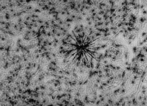
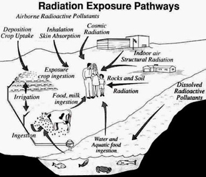
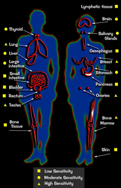
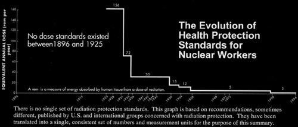
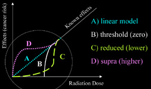
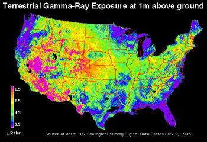

| 
|
Particle of plutonium in lung tissue.
The black star in the middle of this picture shows
tracks made by alpha rays emitted from a particle of plutonium in the lung tissue of an ape (the particle itself is invisible). Alpha rays do not travel
far, but once inside the body they
can penetrate the more that 10,000 cells within their range. In living lung
tissue, if one of the cells adjacent to the particle is damaged in a certain way, it can become a cancer cell
later on, spreading rapidly through the lung, causing almost certain death.
Magnification 500 times.
Lawrence Radiation Laboratory, Berkeley, California. September 20, 1982.
|
Radbasics: Radioactive Exposures and Health
Radiation attacks the human body at its most basic level- the cell structure.
Cells carry out the vital functions necessary to sustain and develop all living creatures. Over ten trillion cells
make up the human body. The cell takes in food, gets rid of wastes, produces protein vital to life, and reproduces
itself. Just as all living things are made up of cells, so every new cell is produced from another cell.
The nature of the cell is determined by the genetic material in its nucleus.
this genetic "coding" in each nucleus is carried by a complex protein called DNA-
deoxyribonucleic acid. This DNA is tightly coiled in the forty-six chromosomes, which are stored in the cell
nucleus. Surrounding the nucleus is the cytoplasm, the "factory" that carries out the directions of the DNA
intelligence center. The cytoplasm in turn is contained by a semipermeable membrane, the cell wall. It is the whole
of this cell mechanism- cell wall, cytoplasm, and nucleus- that forms the basis of human life.
When radiation strikes complex biological molecules, such as proteins or
nucleic acids, it may fracture the molecules and prevent their proper
functioning. This can result in loss of cell vitality, decreased enzyme
activity, initiation of cancer, and genetic mutations.
Ionizing
radiation can break the links between atoms inside the molecules of living
cells. It removes the valence electrons of elements in living materials and disrupts the body at the atomic level.
Such damage to a
cell may change the way it functions, or even kill it.
When a radioactive particle or ray strikes a cell, one of at least four things can happen:
1. It may pass through the cell without doing any damage;
2. It may damage the cell, but in a way that the cell can recover and repair itself before it divides;
3. It may kill the cell;
4. Or, worst of all, it may damage the cell in such a way that the damage is repeated when the cell divides.
Three of those four circumstances can have health effects. The issue of what happens to a cell once it repairs
itself, for example, is the subject of scientific debate. Dr. Alice Stewart has compared the radiation-damaged cell to a
broken plate. Though the plate can be glued together again, its original integrity will never be the same. Every time
it is stressed, it can be more prone to break. The repaired cell may not react to disease or physical injury as well as an
undamaged cell; when it reproduces, this defect may be passed on.
Cell killing can also be harmful. Thousands of dead cells are eliminated from the human body every day, and
thus the body has a certain tolerance for it when radiation adds to the natural toll. In fact radiation is used in some
forms of therapy to kill cancerous cells, to prevent their reproducing. But if enough cells are killed by radiation, it
can seriously impair bodily functions or cause blockages in the body's circulatory system.
The prime danger from radiation striking a cell, however, comes from the potential for damage to the DNA
coding and the creation of cancerous cells. If the DNA is damaged by a ray or particle, it may reproduce itself in an
abnormal manner that is, in essence, the basis of radiation-induced cancer. It is still not fully understood how
radiation actually induces cancer or genetic damage in cells. Drs. John Gofman and Arthur Tamplin theorized in the
early 1970s that when radiation damages a cell "a massive nonspecific disorganization" and destruction of chemical
bonds occurs that is similar to "the effect of a jagged piece of shrapnel passing through a tissue."
Damage can occur to the cell wall, cytoplasm, and nucleus. It is most serious, however, when the DNA or genetic
coding in the nucleus is harmed. Dr. Karl Z. Morgan has likened the disorganization by radiation of the cell DNA
structure to a madman loose in a vast library, randomly tearing out pages of ancient, irreplaceable manuscripts. Once
the DNA is damaged, distorted messages can be transmitted to the cell and passed on through reproduction. Thus
thousands of mutated clone cells can reproduce themselves, forming the basis for tumors and a devastated bodily
system. By the time a tumor can be seen or felt by the touch, it is composed of several million of these abnormal
cells.
There has been considerable debate among radiobiologists about how often a cell must be hit by radiation to
mutate into a cancer. Dr. E. B. Lewis in 1957 advanced the idea that it took just one "hit" to produce irreversible cell
damage. Others believe it may take two or more. There is little dispute, however, over the fact that the cell is most
vulnerable when it is dividing. The human fetus, infants, and young children- whose cells are multiplying most
frequently- are thus the most sensitive to radiation damage; blood-forming organs such as the bone marrow are also
particularly vulnerable.
Dangerous in tiny amounts: A small pellet of plutonium this size
is sufficent to
kill every human on earth if evenly distributed throughout the global population through inhalation.
|
Although radioactive fallout is primarily made up of fission products rather than merely plutonium, these also release beta and gamma radiation.
Nuclear accidents such as Chernobyl also release fission products downwind. When these particles enter the groundwater,
we can injest them from eating livestock and produce grown in the contaminated soils.
Nuclear testing has released this risk several hundred miles downwind.
Findings on the effects of this fallout were reported to U.S. Congress in a
joint study by the Department of Health and Human Services, the Center for Disease Control, and the National Cancer Institute, called
Feasibility Study of the Health Consequences to the American Population
from Nuclear Weapons Tests Conducted by the United States
|
Many radioactive isotopes, such as strontium and iodine, can enter the body where
they replace non-radioactive elements and remain there emitting ionizing
radiation. Living tissue contains large amounts of water and the light elements, hydrogen,
carbon, nitrogen, and oxygen, with lesser quantities of phosphorus and sulfur.
The abundance of these light nuclei increases the dispersal of radioisotopes throughout
living tissue (particularly as carbon-14, tritium, and deuterium are incorporated into
the generation of new cellular material. In many ways the presence of these radioactive isotopes is more
insidious than direct radiation from external sources, which is more easily
detected and reduced by proper shielding.
Molecules containing ionized atoms may react to form substances that are
detrimental to life. The ionizing particles and fission products may undergo
thousands of collisions with the atoms before stopping thus they may cause
extensive ionization in the target material.
The interaction of a high-energy photon (gamma and x-rays)
with matter is very different than that
experienced by a charged particle (alpha or beta radiation). Instead of losing its energy through large
numbers of collisions in a relatively short distance, a photon loses its energy
in a single interaction with an atom of the target material. The outcome of
this interaction depends on the energy of the photon; it can produce secondary
electrons and photons that can continue the transfer of energy to nearby atoms.
Because gamma and x-ray photons, as well as neutrons, transfer energy to
neighboring atoms by means of secondary electrons and photons, the radiation
they produce is known as indirect ionizing radiation. Conversely, the radiation
produced by alpha particles and protons is known as direct ionization because
its energy is transferred directly to the target material.
Because neutrons have short half-lives (approximately 640 seconds) they do not
exist in the absence of fission. In collisions with the light nuclei present in
living material, fast neutrons produce indirect ionizing radiation. When slow
neutrons are captured by target nuclei, most of their energy is dissipated as
heat and thus little ionization is produced. Thus, the net effect is that
neutrons damage tissue by causing both ionization and heating.
All the processes described so far are physical and occur within approximately
10-16 of a second of interacting with living tissue. After this, some energized
atoms and molecules can dissipate their energy by becoming free radicals and
other excited molecules. Free radicals are atoms or molecules that are
electrically neutral and have an unpaired valence (outer) electron; they are
extremely reactive chemical species. Because living tissue contains a large
amount of water, the primary free radicals are Hx and OHx; the former is a
strong reducing agent and the latter, which predominates, is a strong oxidizing
agent. These free radicals are known to cause abnormal chemical reactions in
living substances.

Radiation can also damage the body's immune system and cause a general degeneration in the health of the cell
structures. Thus radiation may cause illness and premature aging without actually bringing on the more easily
isolated diseases of cancer and leukemia.
In recent years controversy has arisen over the particular vulnerability of infants in utero and small children to the
ill-effects of radiation. Exposure of the fetus to radiation during all stages of pregnancy increases the chances of
developing leukemia and childhood cancers. Because their cells are dividing so rapidly, and because there are
relatively so few of them involved in the vital functions of the body in the early stages, embryos are most vulnerable
to radiation in the first trimester-particularly in the first two weeks after conception. This period carries the highest
risk of radiation-induced abortion and adverse changes in organ development. During this stage of development the
tiny fetus can be fifteen times more sensitive to radiation-induced cancer than in its last trimester of development,
and up to a thousand or more times more sensitive than an adult. In general it is believed that fetuses in the very
early stages of development are most vulnerable to penetrating radiation such as X rays and gamma rays.
In all stages, they are vulnerable to emitting isotopes ingested by the mother. For example, if a pregnant mother
inhales or ingests radioiodine, it can be carried through the placenta to the fetus, where it can lodge in the fetal
thyroid and where its gamma and beta emissions can cause serious damage to the developing organ. Once the fetal
thyroid is damaged, changes in the hormonal balance of the body may result in serious-possibly fatal-
consequences for the development of the child through pregnancy, early childhood, and beyond. Such effects
include underweight and premature birth, poorly developed lungs causing an inability to breathe upon delivery,
mental retardation, and general ill-health.
Other emitters can lodge in other fetal organs. For example, yttrium-90, a decay product of strontium 90, can
gravitate toward the pituitary gland. Overall, fetal irradiation during the second and third trimester has been linked
to microcephaly (small head size), stunted growth and mental retardation, central nervous system defects, and
behavioral changes. Exposure of the fetus to radiation during all stages of pregnancy increases the chances of
developing leukemia and childhood cancers.
Young children also undergo more rapid cell division than adults, as do children in puberty. This rapid growth
makes them very susceptible to radiation damage. Also at high risk are the elderly and chronically ill. These groups
have weakened immune systems because of less active red bone marrow. Healthy immune systems can often isolate
and remove damaged cells before malignancies develop. Older people generally have less vigorous immune systems;
they have also generally experienced more radiation from both natural and human-made sources than
young people, and thus may be more susceptible to additional exposure.
Women are also considered to be twice as sensitive to radiation as men because of their predominance in
contracting breast and thyroid cancers.
Cancers shown to be initiated by radiation include leukemia, and cancers of the pancreas, lung, large intestine,
thyroid, liver, and breast. Life-shortening anemia and other blood abnormalities, benign tumors, cataracts, and
lowered fertility are other random effects attributed to radiation exposure.
The health effects of radiation with the greatest long-term implications are those centered on damage to the genes.
Radiation is known to increase genetic mutations that can be passed on from generation to generation. Natural
background radiation contributes some genetic mutations, and has been labeled by some as a factor in the
evolutionary process. Some inherited mutations change a plant or animal so that it is better equipped to live in its
surroundings.
But problems arise with artificially produced mutations. No mutation randomly produced by human-made
radiation has been known to be beneficial. And mutations may not surface for generations. In 1972 the National
Academy of Sciences Advisory Committee on the Biological Effects of Ionizing Radiation (BEIR committee) stated
that "the spectrum of radiation-caused genetic disease is almost as wide as the spectrum from all causes." They
added that "a genetic death may be the death of an embryo that no one ever knows about, or it may be the failure to
reproduce. On the other hand, it may be a lingering and painful death in early adult life that causes great distress."
Based on the BEIR committee's assumptions of genetic risk from ionizing radiation, the risks to future
generations can multiply enormously through time. If a single exposed radiation worker produces two children, who
in turn have two children each, and so on through the generations, by the twentieth generation there may be as many
as 2,097,152 human beings put at risk from the single exposed worker.
Reprinted from "Killing Our Own: The Disaster of America's Experience with Atomic Radiation" by Harvey Wassermann and Norman
Solomon, Delta Books, 1982. pp 217-219
|
 |
Different types of cancer from ionizing radiation
Plutonium, uranium and radioactive strontium can be retained in bones;
Radioactive iodine can be retained in the thyroid;
Inhaled particles can be retained in the lungs;
Plutonium can be retained in the liver;
Uranium and radioactive cesium can be retained in the kidneys;
Radioactive cesium can contaminate the skin;
Muscle cancer can be caused by radioactive cesium retained in the muscles and organs;
Plutonium can contaminate internally, affecting the
reproductive organs, and radioactive cesium can contaminate the groin, irritating the testicles-
each of which can cause genetic effects.
The following medical illnesses are equivalent to what is listed as medical illnesses qualifying
qualifying for government benefit for atomic bomb survivors:
1. Anemia. Leukemia.
2. Liver Function abnormalities (except for viral or serum hepatitis)
3. Cancer.
4. Endocrine (hormone) abnormalities. Example: Diabetes Mellitus.
5. Stroke, brain hemorrhage.
6. Circulatory organ dysfunction. Example: hypertensive cardiovascular diseases, etc.
7. Kidney dysfunction. Example: Chronic nephritis, nephrotic syndrome.
8. Visual organ dysfunction. Example: Cataract (except hereditary type).
9. Respiratory organ dysfunction. Example: Lung tumor.
10. Musculoskeletal system abnormalities. Example: deforming arthritis.
11. Digestive system abnormalities from ulcer/ inflammation. Example: stomach ulcer.
|
Sensitivity of Various Tissues to Cancer Induction by Radiation
| Site or Type of Cancer | Spontaneous Incidence of Cancer | Relative Sensitivity to Radiation Induction of Cancer | Remarks |
| | | |
| Major radiation-induced cancers | | | |
| Female breast | Very high | High | Puberty increases sensitivity |
| Thyroid | Low | Very high, especially females | Low mortality rate |
| Lung (bronchus) | Very high | Moderate | Quantitative effect of smoking uncertain |
| Leukemia | Moderate | Very high | Especially myeloid leukemia |
| Alimentary tract | High | Moderate to low | Occurs especially in colon |
| | | |
| Minor radiation-induced cancers | | | |
| Pharynx | Low | Moderate | - |
| Liver and biliary tract | Low | Moderate | - |
| Pancreas | Moderate | Moderate | - |
| | | |
| Lymphomas | Moderate | Moderate | Lymphosarcoma and multiple myeloma, but not Hodgkin's disease |
| Kidney and bladder | Moderate | Low | - |
| Brain and nervous system | Low | Low | - |
| Salivary glands | Very low | Low | - |
| Bone | Very low | Low | - |
| Skin | High | Low | Low mortality. High dose necessary? |
| | | |
| Sites or tissues in which magnitude of radiation-induced cancer is uncertain | | | |
| Larynx | Moderate | Low | - |
| Nasal sinuses | Very low | Low | - |
| Parathyroid | Very low | Low | - |
| Ovary | Moderate | Low | - |
| Connective tissues | Very low | Low | - |
| | | |
| Sites or tissues in which radiation-induced cancer has not been observed | | | |
| Prostate | Very high | Absent? | - |
| Uterus and cervix | Very high | Absent? | - |
| Testis | Low | Absent? | - |
| Mesentery and mesothelium | Very low | Absent? | - |
| Chronic lymphatic leukemia | Low | Absent? | - |
| | | |
| | | Source: 1980 BEIR Report |
Acute Radiation Syndrome
Following a high radiation dose, many cells will be killed directly, or damaged
in such a way that they will not be able to replicate or reproduce themselves
successfully. These mechanisms lead to forms of radiation sickness. Cells which
are in the process of growing and dividing rapidly are particularly vulnerable,
e.g., the cells of an embryo or a young child, the lining of the intestinal
tract, red bone marrow and reproductive cells.
The immediate effects of acute exposure to radiation are caused by free
radicals rupturing the cell membranes. This rupturing causes the cells to lose
their contents and die. If enough cells are killed, functions associated with
the cells cease. Death occurs because of the direct loss of vital organs or
because of secondary infections resulting from the breakdown of the immune
system.
High doses of up to 30 sieverts (3000+ rem) damage the central nervous system, causing
nausea, severe vomiting, disorientation, coma and possibly death within hours.
Lower doses, of between 10 and 30 sieverts (1000-3000 rem), damage the gastro-intestinal tract,
leading to nausea and vomiting in the first few hours. Internal hemorrhages,
diarrhoea and septicaemia follow. Progressive dehydration can result in death within several weeks.
Death may also occur due to a breakdown of cell
replacement within the lining of the gut.
Lower doses from 3 to 9 sieverts (300-900 rem) damage the bone marrow and other haematopoietic
tissues. This can lead to loss of appetite and hair, hemorrhaging,
inflammation, and secondary infections such as pneumonia. These effects are
also found in patients undergoing radiation therapy. Doses of less than 3 sieverts (300 rem)
are rarely lethal, but cause symptoms that include loss of appetite and hair,
hemorrhaging, and diarrhea.
The effects of high doses of radiation can therefore be broadly summarized as
follows:
•
5 to 50 rad: Slight blood changes may be detected by medical evaluation
•
50 to 150 rad: Slight blood changes including temporary drop in production of new blood cells will be noted and likely symptoms of nausea, fatigue and vomiting for one or two days.
•
150 to 1,100 rad: Severe blood changes will be noted and symptoms appear immediately. Approximately two weeks later, some of those exposed may die. At 300-500 rad, up to one half of the people exposed will die within 30 days without intensive medical attention. Death is due to the destruction of the blood forming organs. Without white blood cells, infection is likely. At the lower end of the dose range, isolation, antibiotics, and transfusions may provide the bone marrow with time to generate new blood cells, and full recovery is possible. At the upper end of the dose range, a bone marrow transplant may be required to produce new blood cells.
•
1,000 to 2,000 rad: The probability of death increases to 100% within one to two 2000 rad weeks. The initial symptoms appear immediately. A few days later, things get very bad, very quickly since the gastrointestinal system is destroyed. Once the GI system ceases to function, nothing can be done, and medical care is for comfort only.
There are many symptoms of radiation sickness, and their severity varies greatly depending on the dosage.
The initial
symptoms
include: |
These symptoms may be followed by: |
• Nausea
• Vomiting
• Diahrrea
• Fatigue
|
• Headache
• Shortness of breath
• Rapid heartbeat
• Inflammation of the mouth and throat
• Worsening of tooth or gum disease
• Hair loss
• Dry cough
|
• Heart inflammation with chest pain
• Burning
• Permanent skin darkening
• Bleeding spots anywhere under skin
• Haemorrhage
• Anaemia
|
In cases where the radiation exposure has been severe - approximately 10 gray or more (1 Gray = 100 Rads) - death may occur within two to four weeks.
Those who survive six weeks after the receipt of a single large dose of radiation to the
whole body may generally be expected to recover, but damage to organs or DNA may take years to become apparent.
Most are unaware of genetic affects until child-bearing.
What treatment is available?
Anti-nausea drugs and painkillers can be used to relieve symptoms of radiation sickness.
Antibiotics may also be needed to fight off secondary infection.
Blood transfusions may be necessary for patients suffering from anaemia.
Potassium Iodine capsules are perhaps the most well-known preventative for the effects of radiation,
however, these tablets merely ensure that the body's levels of these natural minerals are high, so that their radioactive
counterparts (such as iodine-131) will be less likely to be ingested in their place. They do not offer a defense
against the effects of other radioisotopes, or the effects of radiation itself (such as bombardment of
bodily tissues by gamma radiation).
Radiation Protection Standards
The harmful effects of radiation have been recognized since the first report on
X-ray damage was published in 1896 by Henri Becquerel. By 1915, Swedish and German
scientists suggested "safe practices" such as keeping as much distance as possible
from machinery, and reducing work time.
They published in 1925 estimates of "tolerance doses"
based upon the amount of radiation which would burn skin. The equivalent
amount of 156 rem per year was about 45 times the current dose standard.
Four years later in 1928, an International X-Ray and Radium
Protection Committee (IXRPC) was established. (this was reformed in 1950 into
the International Commission for Radiological Protection (ICRP). With it came the first
international x-ray protection standard, of one-hundredth of the amount which would burn skin.
This step led to the first standardized tolerance dose, set in 1931 at 6 rem per month,
or 72 rem per year.
In 1933, Mueller discovered that radiation caused genetic mutations in fruit flies.
The following year, the IXRPC rolled out its new standard which applied to forms
of radiation, and set the worker-dose allowance to 0.1 rem per day (30 rem per year).
The Manhattan Project was soon underway in the early 1940s, and accepted the same standard.
The term "recommended tolerance" was dropped in favor of "maximum permissible exposure."
The Manhattan Project set tolerance limits for plutonium inhalation, which were set
at 0.0005 gram per person, and later lowered to 1 millionth of a gram.
Testing and usage of the first atomic bombs increased the understanding of the
effects of radiation. Quality factors for different types of radiation were introduced
to account for varying health effects. By 1950, scientists discarded the concept of a
"maximum permissible exposure" upon recognition that any amount of radiation may be dangerous.
Citing concerns over latent cancer, life shortening, and genetic damage, they suggested that
exposure be kept "as low as reasonably achievable" (ALARA), and cut the standard in half to
0.3 rem per week (15 rem per year). The principle of ALARA continues to be applied in
radiation safety.
In 1954, the US Bureau of National Standards set a quarterly limit of 3 rem per 13 weeks
(12 rem per year). This was updated in 1958 when a study conducted by
the National Academy of Sciences on genetic damage. Workers over 18 years of age
were allowed to receive 5 rem per year. Annual doses were allowed to exceed this amount
up to 3 rem per 13 week period (corresponding to the previous standard of 12 rem per year).
A new lower level was set for the general public at 0.5 rem per year.
The 5 rem per year limit was adopted by the Federal Government in 1968, and has persisted
despite later findings of the National Academy of Sciences, and revisions by
international authorities.
In 1972, the National Academy of Sciences published it's first report in 16 years
on the subject, called the Biological Effects of Ionizing Radiation.
BEIR I was the first in a series. By BEIR V in 1990, the National Academy of Sciences
determined that radiation was nine (9) times as damaging as BEIR I had estimated.
The result was that annual doses could no longer exceed the 5 rem limit, and later
the same year the International Commission on Radiation Protection made it's
recommendation that an average dose of 1-2 rem per year not be exceeded.

For many years, the single most important body of information on the effects of radiation came
from the study of Hiroshima and Nagasaki survivors. The interpretation of this
data had provided the basis for international radiation protection standards,
but, as the level of our scientific knowledge increases, it becomes apparent
that many of the assessments have been inaccurate. It appears, for instance,
that the amount of radiation released had been calculated wrongly and, as a
result, the harmful effects per unit dose may need to be doubled.
Following the catastrophe at Chernobyl, more information has been available for study.
The safety
standards of most countries follow the recommendations of the ICRP.
It has been
argued that the membership of the committee is too narrow; it is drawn largely
from the nuclear industry, its regulatory bodies and medical radiologists.
Historically, the largest proportion of its membership has been physicists,
while geneticists, pathologists, epidemiologists and, strangely enough,
biophysicists have rarely appeared. Their recommendations have been
increasingly incorporated into national radiation protection legislation and
regulations. As more has been learned about the nature and scale of the risks,
the committee has been forced to react by lowering its maximum permissible
levels of whole-body radiation exposure. For nearly 20 years, for example,
the Committee resisted updating standards by claiming that the evidence that risks have been
consistently underestimated remained inconclusive.
The Effects Of Low-Dose Radiation
While there is now broad agreement about the effects of high-level radiation,
there is vehement controversy about the long term effects of low-level doses.
Data interpretation is complicated by: the length of time it can take for
effects to become apparent; the fact that the populations under study (bomb
survivors, people exposed to fallout from weapons testing, workers in the
nuclear industry) are small and exact dosages are hard to calculate; and the
fact that, for a number of reasons, it is difficult to compare one study with
another.
|

|
One result of this low-dose controversy is to open to criticism, and different predictions
about the effects of any given dose. A growing number of scientists point to
evidence that there is a disproportionately high risk from low doses of
radiation. Others assume a directly proportioned relationship between the
received dose and the risk of cancer for all levels of dose, while there are
some who claim that at low doses there is a disproportionately low level of
risk.
Some even claim with industry supported studies that there is some attributable
benefit to exposure to low-dose, and argue that the shrinking of the levels deemed as
safe by radiation protection standards over the years by physicists should be reversed.
These studies are often presented with arguments that the Three-Mile Island and Chernobyl
accidents caused no dangerous population exposures, and consistently ignore crucial pieces
of data to "prove" their point. (for example, the latest such low-dose studies
ignored thyroid and lymphoma cancers)
|
What does radiation do to the body?
Radiation causes atoms, the basic building block of the body's cells, to become agitated
which can be potentially dangerous to the body. Cell damage from radiation exposure can cause
devastating harm to the immune system and to the tissues of the body.
Natural background radiation causes only low levels of damage which can be repaired by the body.
However, when the body is exposed to unnaturally high levels of radiation it cannot combat the damage caused.
Among the cells that are most sensitive to radiation are those that line the intestine (crypt cells), white blood cells that fight infection and the cells that make red and white blood cells.
The impact on these cells leads to the classic early symptoms of radiation sickness.
For instance, damage to the intestine cells stimulates
nausea, vomiting and dehydration.
Radioactive fallout in the form of particulate matter can be swallowed or breathed in.
Radiation penetrates the body and is wholly or partially absorbed by soft and hard tissue.
This is a map of radiation produced by above-ground nuclear testing (1945 to
1963) by the United States at the Nuclear Test Site in Nevada. The prevailing
winds in Nevada are almost due north, with the result that Idaho received some
of the highest doses in the nation. It was produced from the studies of teeth and bone
for amounts of strontium-90. Apologists for the nuclear industry downplay the study of radioisotopes in
teeth, maintaining that the sources of the strontium are unidentified. "Given the quality of the estimation processes used, it should be used with
great caution" according to Russ Brown, former INEEL worker and founder of the
Idaho Environmental Council.
What is the long-term health impact?
Radiation-related illnesses tend to show themselves about 10 to 15 years after a radiation disaster.
The body's endocrine, or hormone-secreting, glands appear to be particularly sensitive to radiation.
It is now widely accepted that the Chernobyl nuclear disaster has led to a massive increase in thyroid cancers in the three countries most affected.
Already, 680 cases of thyroid cancer have been recorded in Belarus, Russia and Ukraine. Belarus has shown a 100-fold increase, from 0.3 per million in 1981-85 to 30.6 per million in 1991-94.
Unicef has noted significant increases in many types of health disorders in Belarus since the disaster.
For example, problems of the nervous and sensory organs have increased by 43%; disorders of the digestive organs by 28%; and disorders of bone, muscle and the connective tissue system have increased by 62%.
The Ministry of Chernobyl in Ukraine estimates that those people living in contaminated areas are twice as likely to suffer
from disease as people from clean areas.
Scientists studying Chernobyl victims have also observed radiation-induced genetic mutations passed
down from generation to generation. Genetic mutations appear to occur twice as often in the children of families exposed
to radioactive fallout and represent permanent damage to the DNA that is passed down through the generations.
What is Background Radiation?
Background radiation comes from
three sources: cosmic rays, naturally occurring radioactive elements such as
radon-222, and solar radiation. The amount of exposure to this natural
radiation depends on a number of factors, such as geographic location, house
construction materials, medical treatments, and occupation. Each year the average
American receives an effective dose of about 3 mSv (300 millirem or 0.3 rem) from
background radiation.
How Do I Calculate My Yearly Dose?
Add up the following items to find out your annual dose:
Cosmic radiation
We will start with sea level: Add 26 mrem
What is the elevation of your town?
| up to 1000 ft: | 2 mrem |
| 1000 to 2000 ft: | 5 mrem |
| 2000 to 3000 ft: | 9 mrem |
| 3000 to 4000 ft: | 15 mrem |
| 4000 to 5000 ft: | 21 mrem |
| 5000 to 6000 ft: | 29 mrem |
| 6000 to 7000 ft: | 40 mrem |
| 7000 to 8000 ft: | 53 mrem |
| Above 8000 ft: | 70 mrem |
Terrestrial (from the ground):
What region of the US do you live in?
| Gulf Coast: | 23 mrem |
| Atlantic Coast: | 23 mrem |
| Colorado Plateau: | 90 mrem |
| Elsewhere in the US: | 46 mrem |
|
Internal radiation (in your body):
From food and water, (e.g. potassium): Add 40 mrem
From air, (radon): Add 200 mrem
Do you have porcelain crowns or false teeth? If Yes, add 0.7 mrem
Travel Related Sources:
Add 1 mrem for each 1000 miles traveled by jet this year
X-ray luggage inspection machines at the airport? If Yes, add 0.002 mrem
Use gas lantern mantles when camping? If Yes, add 0.003 mrem
Miscellaneous Sources:
Add 1 mrem for weapons test fallout
Live in a stone, brick, or concrete building? If Yes, add 7 mrem
Wear a luminous wristwatch (LCD)? If Yes, add 0.06 mrem
Do you watch TV? If Yes, add 1 mrem
Do you use a CRT computer terminal? If Yes, add 1 mrem
Do you have a smoke detector in your home? If Yes, add 0.008 mrem
Medical x-rays taken per year: Add 40 mrem for each.
Nuclear medical procedures per year: Add 14 mrem for each.
|
